Префектура Киото · Аманохасидатэ · вино и ночлег
Chitose у Аманохасидатэ: обэрж с погребом на 50 000 бутылок и своей винодельней
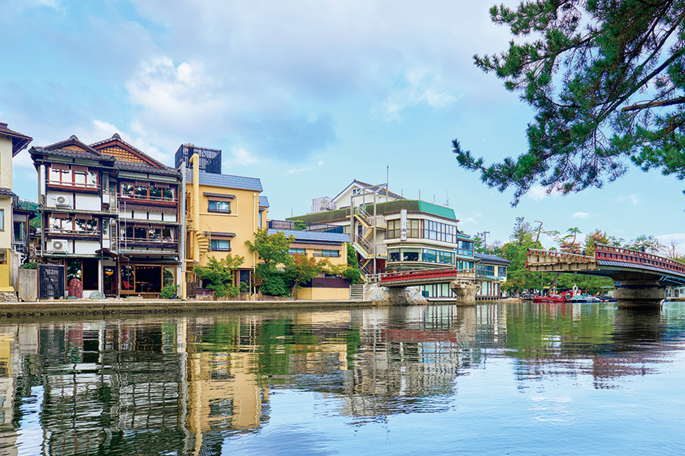
На берегу канала у песчаной косы Аманохасидатэ стоит маленький обэрж Chitose. Владелец гостиницы сам основал винодельню на другой стороне залива, а в погребе гостиницы хранится около 50 000 бутылок.
Место
Коса, по которой боги ходили с неба
Аманохасидатэ, песчаную косу, поросшую соснами, считают одним из трёх самых знаменитых видов Японии. Она лежит в городе Миядзу, у основания полуострова Танго, и отделяет спокойный залив Миядзу от лагуны Асо-кай. Город считается центром «Киото у моря»: так называют семь городов и посёлков на севере префектуры, где природа и старая история живут бок о бок.
По преданию, косу оставил бог Идзанаги, который вместе с богиней Идзанами, по японским мифам, сотворил острова Японии. Он ходил к ней по лестнице, спущенной с неба, и однажды лестница упала в море. Так что гостиница, о которой пойдёт речь, стоит у самого края мифа.
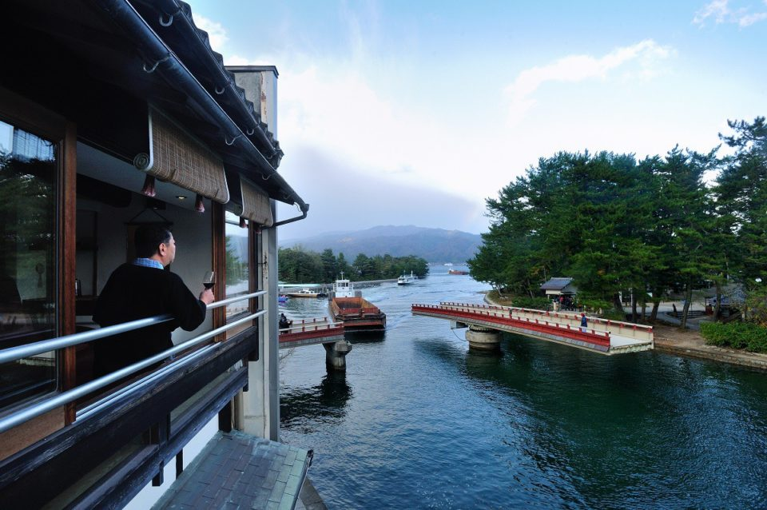
Косу соединяет с берегом мост Кайсэнкё. Когда по каналу идёт судно, мост поворачивается на 90 градусов, и движение по нему останавливается. По воскресеньям в 2026 году его разворачивали раз в час с 11:00 до 15:00, в остальные дни без расписания, и в оживлённый день он поворачивается до 50 раз.
Обэрж
Chitose: старый рёкан на берегу канала
Гостиница стоит на противоположном от косы берегу, вдоль канала. Её предшественник, рёкан «Титосэ», принимал гостей с середины эпохи Эдо. Нынешний владелец перестроил его в обэрж и в самом названии поставил вино на первое место: по-японски оно звучит как «Вино и ночлег Титосэ».
Владелец учился виноделию в Германии и на Хоккайдо, вернулся в Миядзу, начал сажать виноградную лозу и в 1999 году основал Amanohashidate Winery. Он много лет участвует в жизни города, а вина для погреба гостиницы покупает сам, пробуя их на месте. В 2026 году там было около 50 000 бутылок, и по качеству этот погреб считают одним из лучших в Японии.
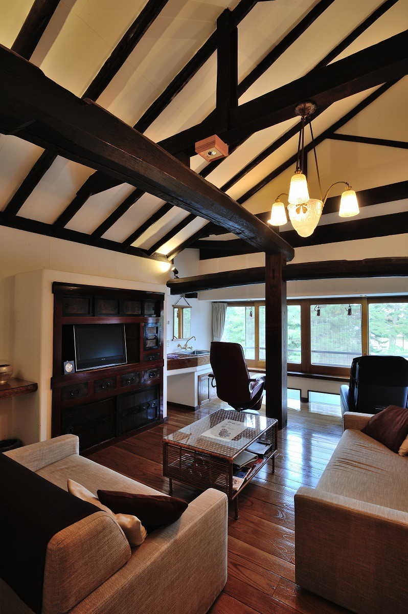
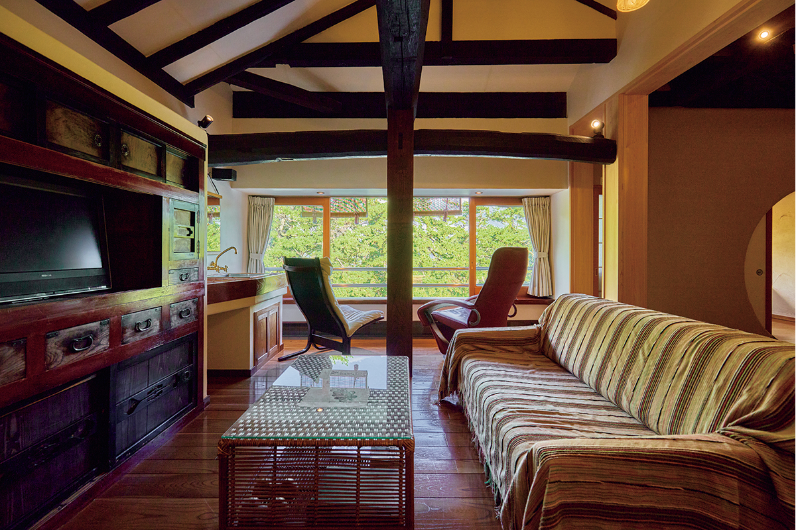
В 2019 году в гостинице было семь номеров: четыре в главном здании, все разной планировки, и три в пристройке. К 2026 году главное здание принимает только две компании гостей одновременно, и каждой отдают целый этаж. В пристройке через дорогу остались три номера в смешанном японско-западном стиле.
Шумная торговая улица у ворот старого храма совсем рядом, но здесь тихо. Гостей встречают бокалом розового вина, и, глядя в окно на канал, можно дождаться, когда мост снова начнёт поворачиваться, пропуская очередное судно.
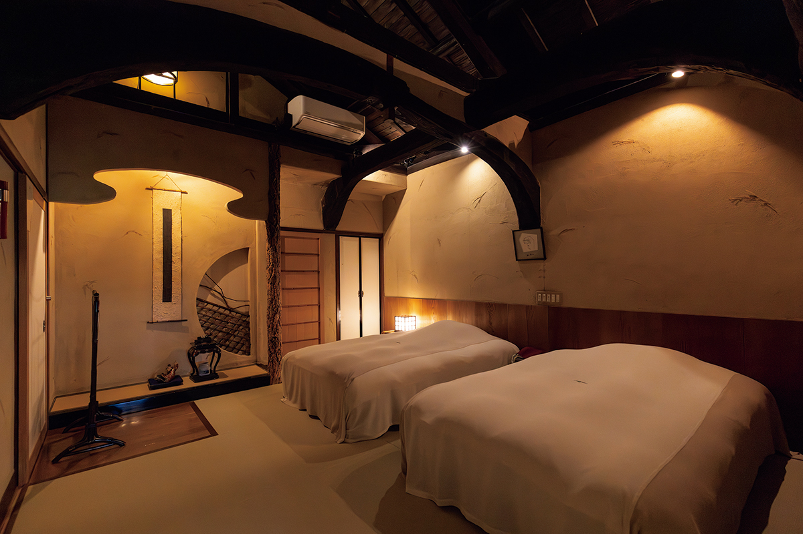
Онсэн
Вода с глубины 1500 метров
На втором этаже гостиницы есть онсэн. Источник Аманохасидатэ поднимается с глубины 1500 метров, и его воду ценят за пользу для кожи: она мягкая, словно обволакивает тело, и после неё долго не мёрзнешь. Купален две: каменная «Таро» и деревянная, из кипариса хиноки, и при каждой есть открытая ванна под небом.
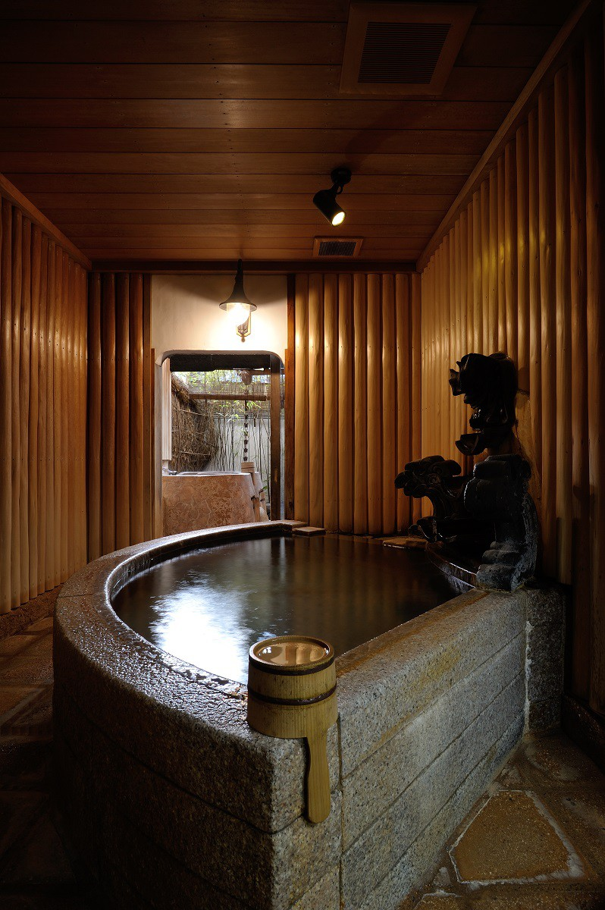
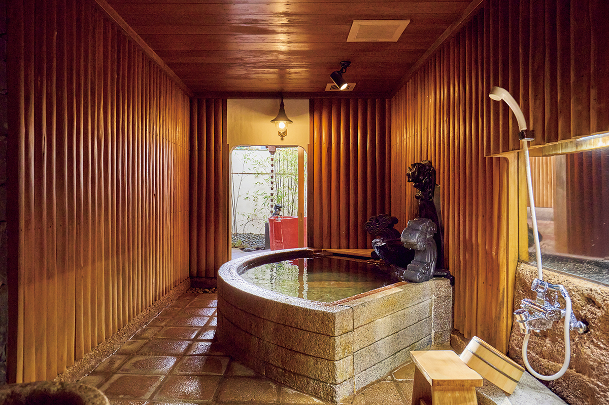
В 2019 году купальни делили на мужскую и женскую, меняя их по времени суток. В 2026 году их отдают отдельно каждому номеру, а на следующее утро гости меняются купальнями. Номеров мало, поэтому можно сидеть в воде сколько угодно и никого не стесняться.
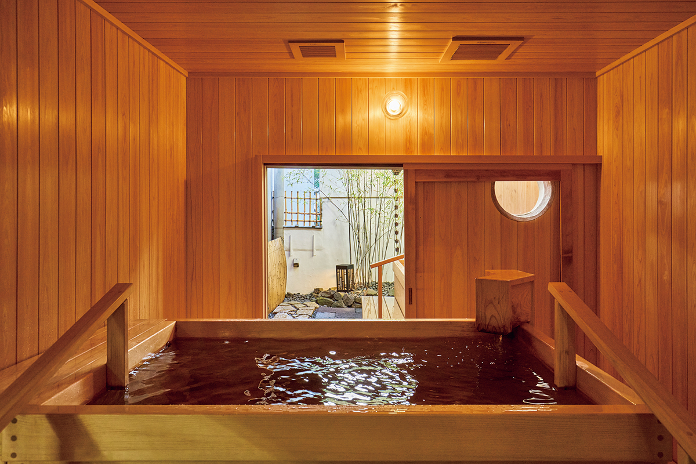
Ужин
Восемь блюд и вино из погреба
Когда вода в канале темнеет, а горы на другом берегу растворяются в сумерках, начинается ужин. Столовая на первом этаже главного здания смотрит прямо на канал. Курс из восьми блюд соединяет японскую и западную кухню: овощи с местных ферм, рыба и морепродукты из портов Миядзу и Инэ, мясо из префектуры Киото.
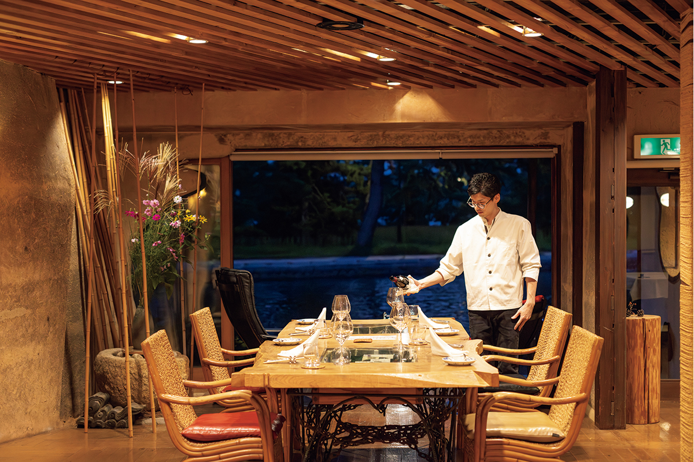
Зимой 2026 года в курсе были тыквенный суп-пюре, сашими, разложенные красиво, как алтарная картина эпохи Возрождения, жареный морской карась под сливочным соусом, филе говядины тадзима и в конце гречневая лапша соба из Цуцукавы в Инэ. В 2019 году ужин тоже завершала соба ручной работы. Зимой бывает отдельный курс с крабом из Тайдза.

Вино к каждому блюду подбирает сомелье, поэтому удобнее всего назвать бюджет и вкус и довериться ему. Можно выбрать вино самому, и тогда под него подстроят блюда. Девяносто девять процентов погреба составляет бургундское, и среди бутылок много редких, которые достаются владельцу только благодаря знакомству с известными французскими виноделами. Ценители едут сюда со всей Японии и из-за границы.
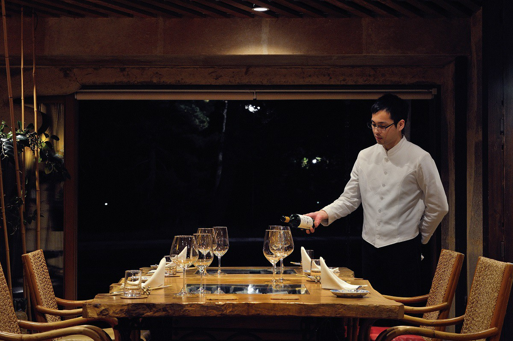
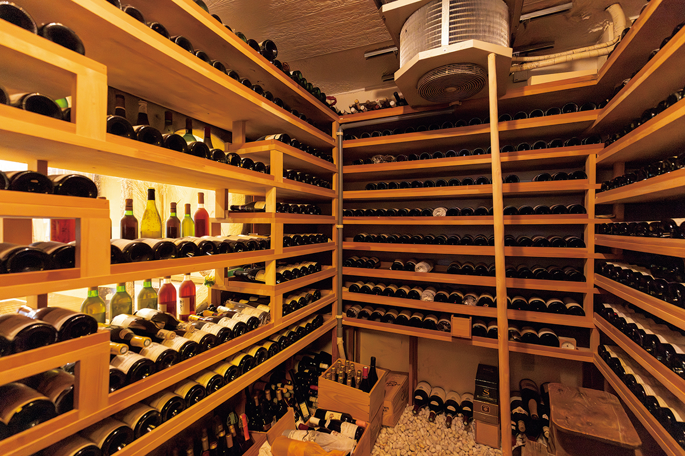
«"Киото у моря" хранит свою историю и культуру, и они живут в повседневной жизни. Не ограничивайтесь городами: ищите здесь свободное пространство, в котором каждый найдёт свою радость»
владелец гостиницы
Chitose
- Адрес
- префектура Киото, Миядзу, Мондзю, 472
- Телефон
- +81 772-22-3268
- Номера
- 2 в главном здании, 3 в пристройке
- Цены / Вход
- от 38 500 иен с человека за ночь с ужином и завтраком, с налогом и сервисным сбором
- Заезд / выезд
- 15:00 / 10:30
- Как добраться
- 3 минуты пешком от станции Аманохасидатэ линии Kyoto Tango Railway; 10 минут на машине от съезда Миядзу-Аманохасидатэ
Винодельня
Amanohashidate Winery: виноград над лагуной
Утром, после онсэна и завтрака из множества маленьких закусок, стоит поехать на винодельню. Она в 20 минутах на машине от гостиницы, на другом берегу лагуны Асо-кай. Отсюда видны и лагуна, и коса Аманохасидатэ, а виноград здесь выращивают, давят и продают в одном месте.
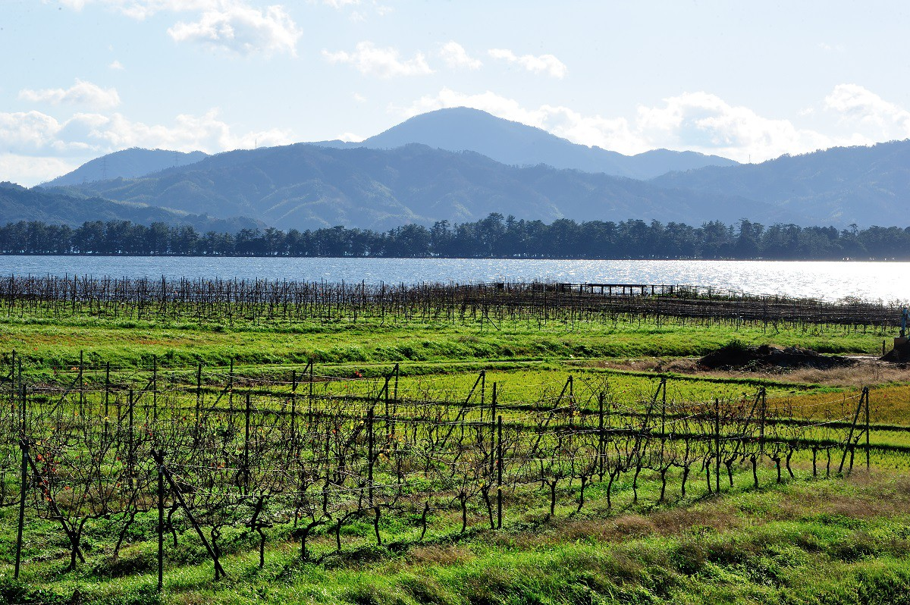
Винный виноград здесь начали сажать в 1991 году, когда японским вином почти никто не интересовался. В 2026 году под лозой около 4 гектаров. Часть земли это заброшенные поля, которые винодельня взяла, чтобы сохранить пейзаж. Удобряют их раковинами устриц из лагуны Асо-кай, и это возвращает местные отходы обратно в землю.

Место хорошо подходит для винограда: перепад дневной и ночной температуры большой, а внутренний залив закрывает лозу от морского ветра. В 2019 году на винограднике росло около 30 сортов, в основном сейбель, в 2026 году около 20: каберне-совиньон и саперави для красного вина, шардоне и сейбель 9110 для белого. Гербициды не применяют совсем, и виноград растёт почти без вмешательства.
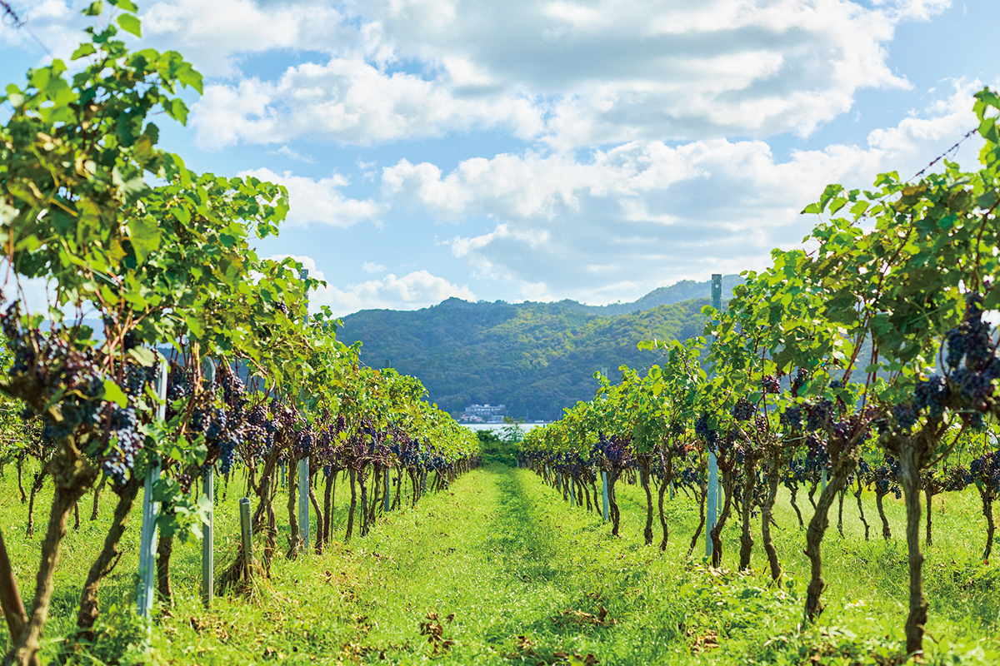
Делать вино здесь учились у немецкого келлермейстера, главного технолога винодельни, и оборудование тоже привезли из Германии. Вино не пастеризуют, чтобы сохранить вкус и фрукт самой ягоды. Вина Amanohashidate Winery двенадцать лет подряд получали награды на конкурсе японских вин Japan Wine Competition.
«Больше 90 процентов вкуса вина зависит от винограда. Наш виноград даёт богатый аромат и мягкий вкус. Сорт, который в Италии дал бы тяжёлое вино, у нас становится спокойным. Вино, которое подходит к японской кухне, и есть терруар Миядзу»
сотрудник винодельни
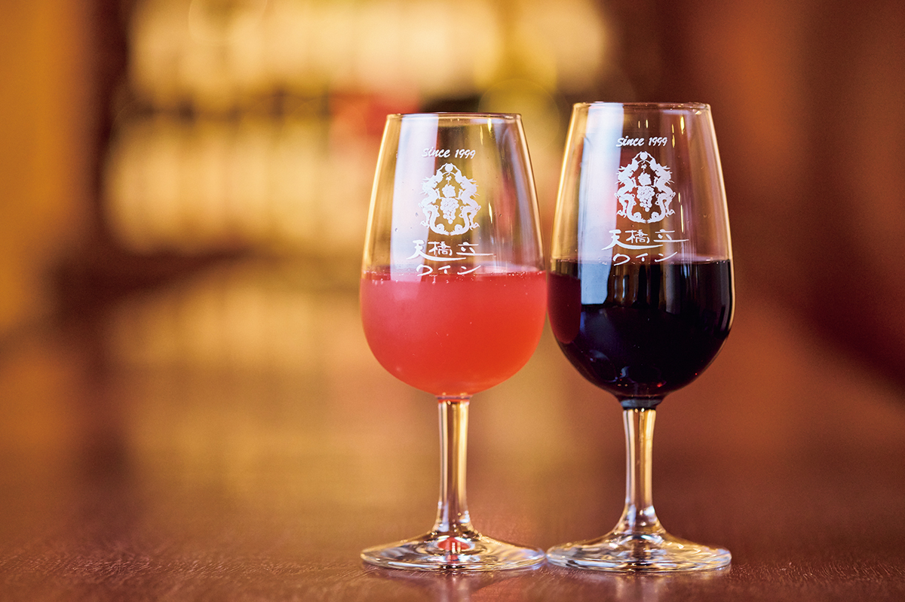
Гостям показывают виноградник, бродильный цех и подземный погреб. На дегустации наливают сезонные вина и федерротер, молодое вино, которое ещё бродит: попробовать его можно только здесь. При винодельне есть ресторан, где местную еду подают в формате шведского стола.
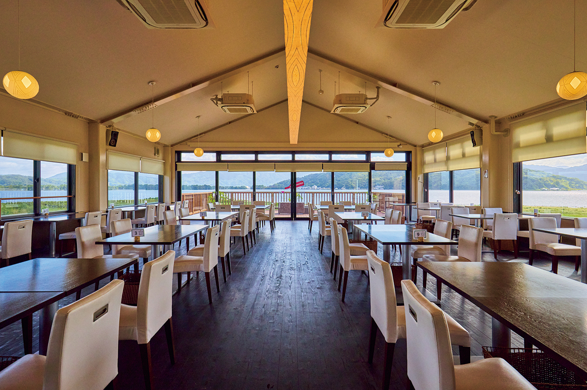
В магазине продают вина ограниченных партий. Одно из них «Токусэн саперави» из винограда саперави, выращенного у Аманохасидатэ. Два года оно выдерживается в бочке в подземном погребе и получается сухим, с дымным дубовым ароматом, уверенной кислотностью, плотным телом и мягким фруктом. В 2026 году бутылка 750 мл стоила 5280 иен.
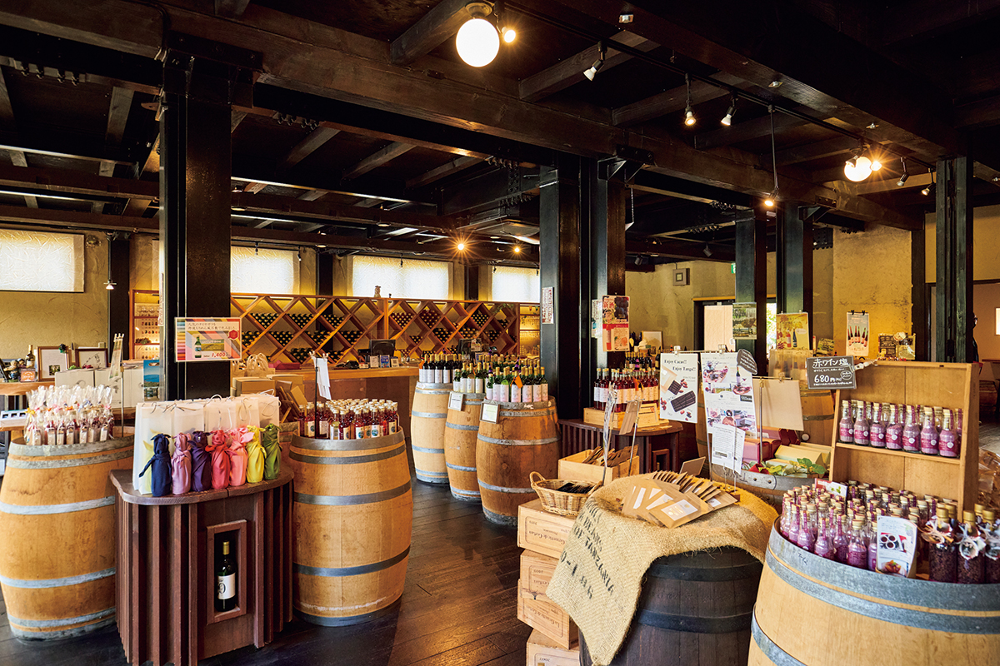
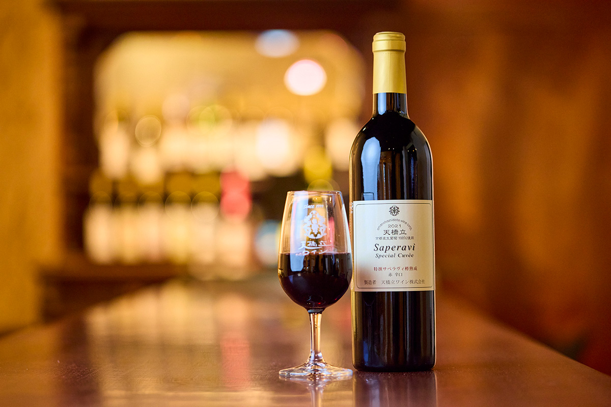
Amanohashidate Winery
- Адрес
- префектура Киото, Миядзу, Кокубу, 123
- Телефон
- +81 772-27-2222
- Часы работы
- экскурсии по производству и винный магазин 10:00–17:00; ресторан 11:00–14:00 (последний заказ); кафе 14:00–17:00 (в будни с 11:00)
- Выходные
- среда (весь комплекс); ресторан и рынок также во 2-й и 4-й вторник
Фото: Ко Миядзи, Косаку Китадзима.